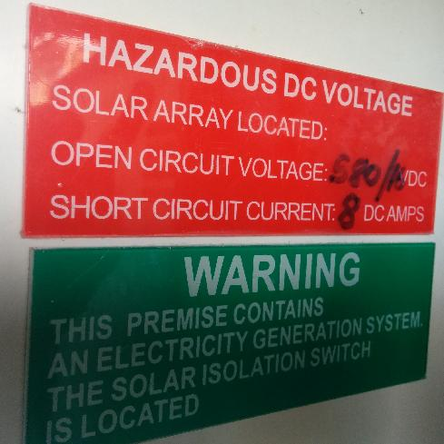

Hi, I'm new here so forgive me if this has already been discussed. I did try searching but could not find a way to search the forum content.
I noticed with interest the "energy diversion" functionality being discussed and implemented. I'd also describe this as "load regulation". My question is has anyone done this on the DC side? In other words, steal a bit of DC power before the inverter gets hold of it and tries to export it. The advantage of handling it on the DC side is that we are generally handling lower voltages and the regulation of DC is much simpler. Both these factors mean cheaper hardware. In the simplest possible arrangement we could use a switch mode voltage regulator to regulate the input voltage rather than the output to give an approximate MPPT system. Alternatively in a more sophisticated system the load connected to the DC could be regulated by an external controller based on AC export metering. A load like a water heating element does not particularly care what voltage it is fed or if it receives a square wave input (although that may generate rf interference so some smoothing would be desirable), in fact the same mains ac heater element you already have installed could be used.
Has anyone tried this or thought about it?
Re: Energy Diversion on DC side
The advantage of handling it on the DC side is that we are generally handling lower voltages
Lower? I could just about make my own lightning bolts with what mine puts out.

Re: Energy Diversion on DC side
If a system uses micro-inverters, regulating the DC side would be a nightmare, if at all possible...
Re: Energy Diversion on DC side
Thank you for your useful feedback.